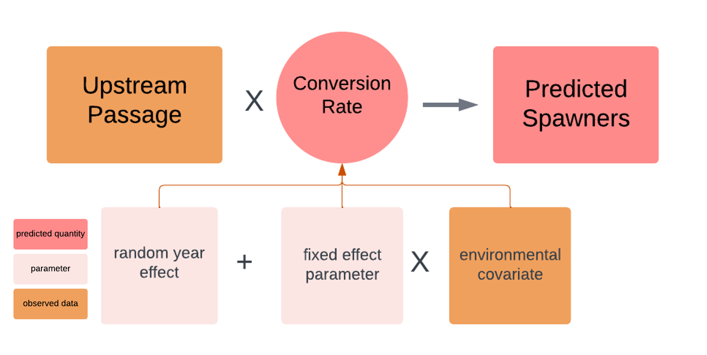
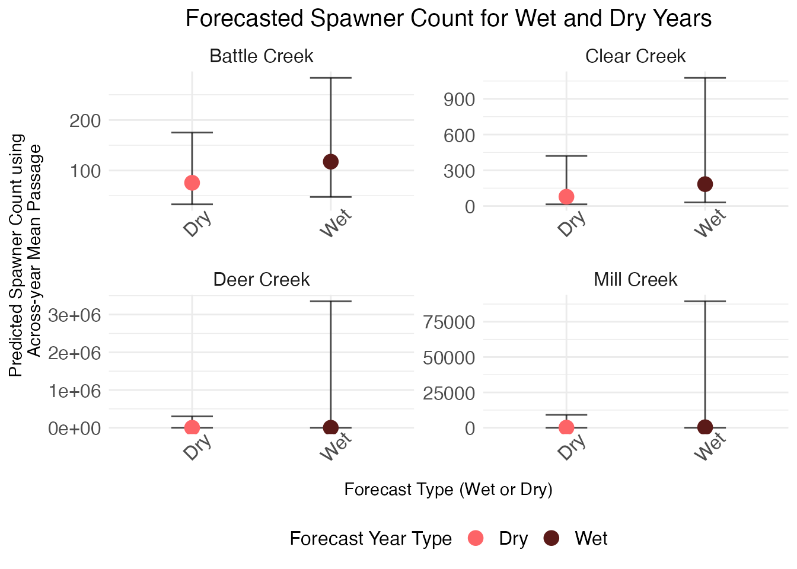

Passage to Spawner Submodel
Liz Stebbins, Ashley Vizek, Erin Cain, Josh Korman
passage_to_spawner_submodel.RmdOverview
The Passage to Spawner (P2S) is a Bayesian model that produces
estimates of spawning adults for Battle Creek,
Clear Creek, Deer Creek, and
Mill Creek with uncertainty. The model can be used to get
spawning adults for a tributary as part of any stock-recruit-based SRJPE
model alternative.
Submodel Objective
The purpose of the P2S submodel is to take in observed upstream
passage, or escapement, estimates from a tributary and model the
relationship with spawner counts, either from redd surveys or holding
surveys. The P2S produces estimated spawner counts with uncertainty for
use in creating the stock portion of a
stock-recruit model in the SRJPE.
The model also estimates a conversion rate, or
proportion of adults that pass though the video counting systems that
become spawning adults (i.e. prespawn mortality). The P2S can also be
used for forecasting; it takes in a standardized environmental covariate
and uses this variable to predict spawners from upstream passage counts.
In this way, the P2S provides resiliency for years where data may be
missing (i.e. years where upstream passage data were collected but
spawner surveys were not conducted).
Conceptual model
This is a DRAFT conceptual model detailing where submodels fit into the overall SRJPE model ecosystem.

Submodel Architecture
The submodel takes observed data (in orange) and predicts spawner counts (in pink). Parameters estimated by the model are light pink; for more information, see documentation.

Model inputs
The model takes in two datasets:
-
Observed adult counts or estimates from all methods
(upstream passage, holding surveys, redd surveys, and carcass surveys)
aggregated by year and stream. This is in the
SRJPEdata::observed_adult_inputdata object. -
Observed environmental covariates aggregated by
year within streams, and standardized (scaled to center on 0). This is
in the
SRJPEdata::adult_model_covariates_standardobject.
Running the P2S submodel
The model is run for a given stream and environmental covariate.
- Options for streams are
battle creek,clear creek,deer creek, andmill creek. - Environmental covariates are
water year type,growing degree days, andmaximum flow.
# run the model for battle creek and water year type
battle_P2S_results <- run_passage_to_spawner_model(SRJPEdata::observed_adult_input,
SRJPEdata::adult_model_covariates_standard,
"battle creek",
"wy_type",
FALSE)
# run the model for clear creek and water year type
clear_P2S_results <- run_passage_to_spawner_model(SRJPEdata::observed_adult_input,
SRJPEdata::adult_model_covariates_standard,
"clear creek",
"wy_type",
FALSE)
# run the model for deer creek and water year type
deer_P2S_results <- run_passage_to_spawner_model(SRJPEdata::observed_adult_input,
SRJPEdata::adult_model_covariates_standard,
"deer creek",
"wy_type",
FALSE)
# run the model for mill creek and water year type
mill_P2S_results <- run_passage_to_spawner_model(SRJPEdata::observed_adult_input,
SRJPEdata::adult_model_covariates_standard,
"mill creek",
"wy_type",
FALSE)Once the model has been fit to separate streams, you can combine them into one data frame:
# join model summaries
P2S_model_fits <- bind_rows(battle_P2S_results$formatted_pars,
clear_P2S_results$formatted_pars,
mill_P2S_results$formatted_pars,
deer_P2S_results$formatted_pars)Model Output
The P2S model produces two objects when run:
- a
full_object, which contains all output of the STAN model (classstanfit) -
formatted_pars, a data table with all parameter estimates and associated statistics.
The most recent results from fitting the model to all streams is
stored as a data object SRJPEmodel::P2S_model_fits and
contains the full parameter list, many of which are technical and not
directly of interest to the SRJPEmodel ecosystem.
SRJPEmodel has additional functions to extract parameter
estimates of interest from this larger table and can quickly produce a
table of predicted spawners by year and tributary.
Extract predicted spawners by year, with uncertainty
| stream | year | median_predicted_spawners | lcl | ucl | data_type |
|---|---|---|---|---|---|
| battle creek | 2001 | 30.72404 | 21.78930 | 41.77793 | P2S_predicted_spawners |
| battle creek | 2002 | 70.62890 | 56.14741 | 87.68848 | P2S_predicted_spawners |
| battle creek | 2003 | 152.91438 | 130.77486 | 178.05002 | P2S_predicted_spawners |
| battle creek | 2004 | 33.45492 | 24.34624 | 45.02828 | P2S_predicted_spawners |
| battle creek | 2005 | 44.07281 | 33.02084 | 57.61342 | P2S_predicted_spawners |

We can also see forecasted spawner count for a wet or dry year with
uncertainty by looking at the abundance_forecast
parameters, which use the average upstream passage as a predictor
variable and water year type as the predictive covariate. Deer and Mill
Creek model fits are limited in utility due to a lack of available data,
so the confidence intervals for those tributaries are much greater than
for Battle and Clear Creeks.
